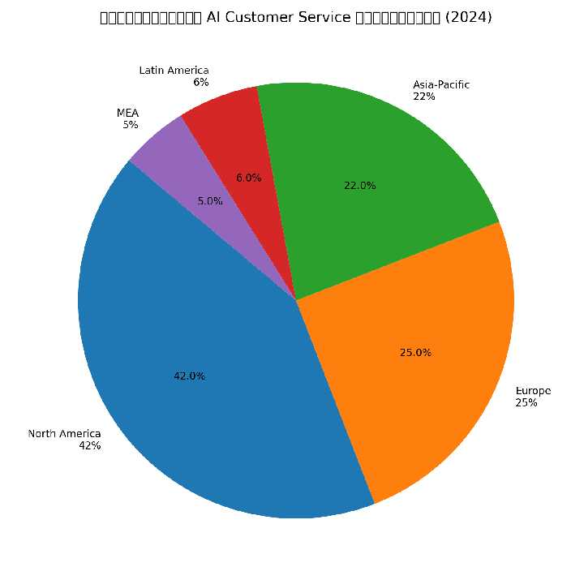

ตลาด AI-driven Customer Service 2024–2034
รายงานตลาดสองภาษา พร้อมข่าวล่าสุด มิ.ย. 2026
AI-driven Customer Service Market 2024–2034
Bilingual market report with latest news – June 2026
การเติบโต SAM / SOM
SAM / SOM Growth

SAM: $12B (2024) → $125B (2034) | SOM 18%: $2.16B → $22.5B
SAM: $12B (2024) → $125B (2034) | SOM 18%: $2.16B → $22.5B
ส่วนแบ่งภูมิภาค 2024
Regional Share 2024

North America 42% | Europe 25% | APAC 22% | LATAM 6% | MEA 5%
North America 42% | Europe 25% | APAC 22% | LATAM 6% | MEA 5%
ข่าวล่าสุด
- NiCE: เปิดตัวแพลตฟอร์ม agentic AI native สำหรับ CX
- TCS AGM: AI เป็น growth driver ใหญ่สุด, เริ่ม deploy Agentic AI
- Gartner: 91% ผู้นำให้ความสำคัญ AI สำหรับ first-contact resolution
- Intercom 2026: มีเพียง 10% ที่ทำ AI ระดับ mature
- Voice AI: คาดตลาด $47.5B ปี 2034, เร็วขึ้น 35%
Latest News
- NiCE: Launches agentic AI-native CX platform
- TCS AGM: AI named biggest growth driver, rolling out Agentic AI
- Gartner: 91% of leaders prioritize AI for first-contact resolution
- Intercom 2026: Only 10% reach